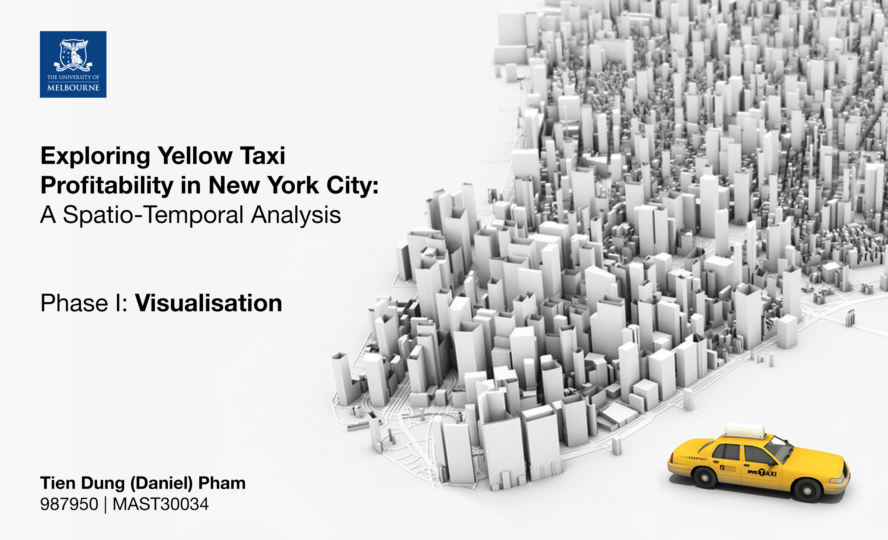

Phase 1 Data Visualisation

Ever since the Uber’s inception into the daily lives of New Yorkers, the booming of share-riding services has added another pressure on the deteriorating taxi industry that is characterized by low profitability and high running costs 1. While the Limousine Commission (TLC) has taken measures to prioritise the benefits of the owners of those yellow taxi medallions, most notably the 2019’s cap on registered for-hire vehicles and reduction on their no-passenger roaming time 2, the yellow taxi drivers still face heavy competition from alternative modes of transportation such as the popular New York Subway. With the release of the annual TLC Yellow Taxi Trip dataset since 2009, there has been an increasing number of literatures on using this open data to identify the factors that can improve the profitability of taxi drivers. Haggag, McManus and Paci (2017) 3 proposed that pick-up and drop-off locations constitute the “neighborhood-specific experience” that helps experienced drivers optimize their routes; while Hochmair (2016) 4 suggested that different time of the day affects passenger’s preference of taxi versus public transport which affects taxi demands. Despite the use of the dataset from different years, most of the literature reported a similar pattern in taxi usage, particularly the increased in taxi trips taken during peak hours, a strong correlation between fare amount and tip amount typical of the American gratuity culture, and the significant difference in demands between Manhattan, airports and other areas in NYC 5.
Phase I of the project aims to investigate the patterns between pick-up locations, time and the profitability of taxi trips against the competition of public transportation using the latest 2019 dataset released by TLC. Through geovisualising the datasets, the findings of this exploratory data analysis hope to reaffirm the abovementioned trends for trips taken in 2019, as well as identifying the characteristics of a profitable driving strategy.
Jiang, S., Chen, L., Mislove, A., & Wilson, C. (2018). On Ridesharing Competition and Accessibility. Proceedings Of The 2018 World Wide Web Conference On World Wide Web - WWW ’18. doi: 10.1145/3178876.3186134↩︎
Mayor de Blasio Puts Into Effect For-Hire Vehicle Cruising Cap and Extends License Cap. (2020). Retrieved 30 August 2020, from https://www1.nyc.gov/office-of-the-mayor/news/384-19/mayor-de-blasio-puts-effect-for-hire-vehicle-cruising-cap-extends-license-cap↩︎
Haggag, K., McManus, B., & Paci, G. (2017). Learning by Driving: Productivity Improvements by New York City Taxi Drivers. American Economic Journal: Applied Economics, 9(1), 70-95. doi: 10.1257/app.20150059↩︎
Hochmair, H. (2016). Spatiotemporal Pattern Analysis of Taxi Trips in New York City. Retrieved 30 August 2020, from https://doi.org/10.3141/2542-06↩︎
Correa, D., Xie, K., & Ozbay, K. (2017). Exploring the taxi and Uber demand in New York City: An empirical analysis and spatial modeling. In 96th Annual Meeting of the Transportation Research Board, Washington, DC.↩︎